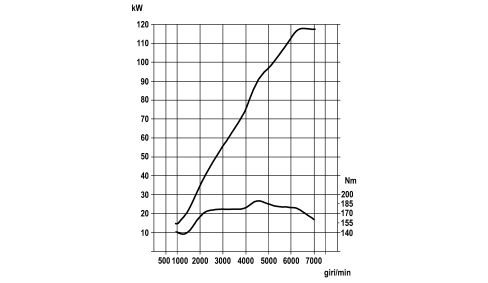
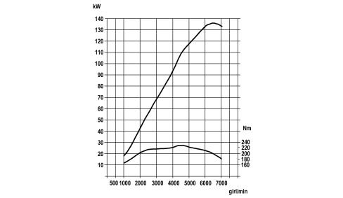
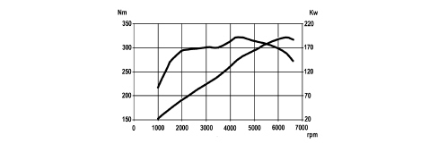
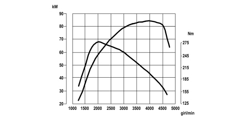
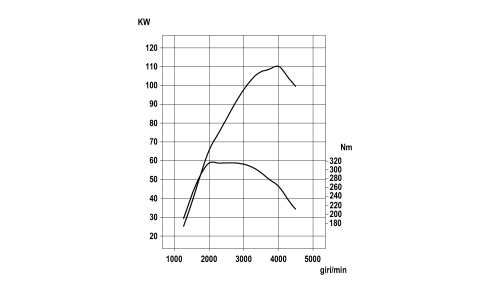
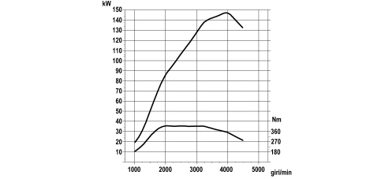

PRESCRIPTIONS
- Path
- Technical Data > DESIGN DESCRIPTIONS AND SPECIFICATIONS > ENGINE CHARACTERISTIC CURVES > PRESCRIPTIONS
- Kind
- technical data / specifications
- Applies to
- all engines; all production periods
- Interactive page
- https://sloeber94.github.io/elrnDB/alfa/159/en/#/939003255
Applies to: all engines; all production periods
The power and torque curves illustrated can be obtained with the engine overhauled and run in (50 hours operation) without a fan and with an exhaust silencer and air filter fitted, at sea level.
1.8 Engine

1.9 JTS Engine

2.2 JTS Engine

3.2 JTS Engine

1.9 JTD 8V Engine

1.9 JTD 16V Engine

2.4 JTD 20V Engine
